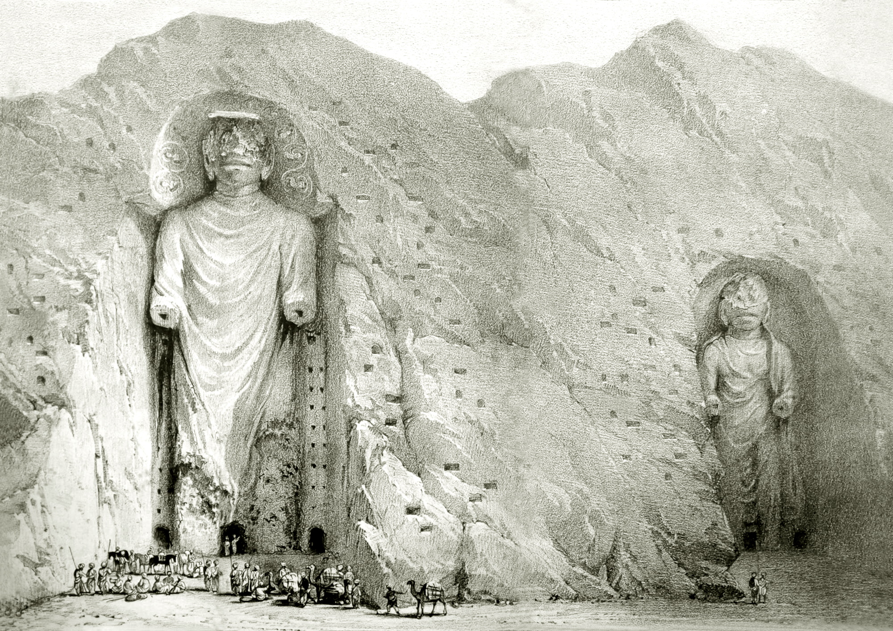
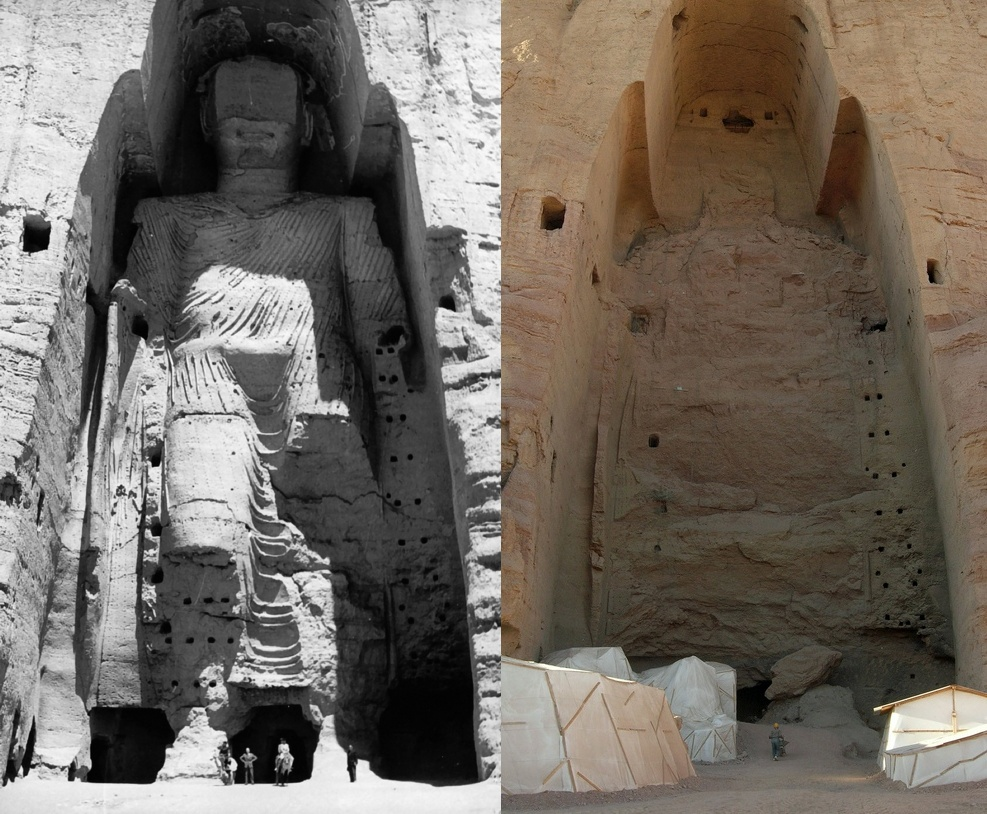

Anatta, the Buddhas of Bamiyan,
and the doctrine that annihilated the self
before any bomb could reach it
අනාත්ම, බාමියාන් බුද්ධ ප්රතිමා,
සහ කිසිදු බෝම්බයකට ළඟා වීමට
පෙර ආත්මය නිෂේධ කළ ශාසනය
In the Bamiyan Valley of central Afghanistan, carved into a sandstone cliff face, two enormous niches now stand empty. For roughly fifteen centuries — from approximately the fifth or sixth century CE until March 2001 — they held the two largest standing Buddhas in the world: Salsal, at 55 metres, and Shahmama, at 38. Pilgrims, merchants travelling the Silk Road, and scholars came to see them. The Chinese monk Xuanzang, who visited in 630 CE, described them as radiant with gold leaf and precious gems.
ඇෆ්ගනිස්ථානයේ මධ්යම හිතාවළිය, බාමියාන් නිම්නයේ, වැලිගල් කලුවරකට කැපූ දෙකක් ශූන්ය ගල් කුළු දැන් හිස්ව පවතී. ක්රි.ව. 5 හෝ 6 සියවසේ සිට 2001 මාර්තු දක්වා, ශතවර්ෂ 15 ක් පමණ — ලෝකයේ ලොකුම සිරිබෝ ප්රතිමා දෙකක් ඒවා දරා සිටියේය: 55m ්ශාල්සාල් සහ 38m ශාහ්මාමා. සිල්ක් රොඩ් ඔස්සේ ගිය වන්දනාකරුවන්, වෙළෙඳුන්, සහ ශාස්ත්රීය දෙනා ඒවා බැලීමට පැමිණියහ.

"To the north-east of the royal city there is a mountain, on the declivity of which is placed a stone figure of Buddha, erect, in height 140 or 150 feet. Its golden hues sparkle on every side."— Xuanzang, Record of Western Regions, 630 CE
In March 2001, the Taliban Supreme Leader Mullah Omar issued an edict declaring all statues in Afghanistan to be idols and ordering their destruction. Over three weeks, soldiers fired tanks and artillery at the Buddhas, drilled holes into them, packed the cavities with dynamite, and detonated them. Local Hazara people were forced to assist under threat of execution. On March 9, the larger Salsal fell. On March 12, Shahmama followed.
2001 මාර්තු මාසයේ, තාලිබාන් ශ්රේෂ්ඨ නායක මුල්ලා ඔමර් ඇෆ්ගනිස්ථානයේ සියලු ප්රතිමා දෙව්රූ ලෙස ප්රකාශ කොට, ඒවා විනාශ කිරීමට ෆර්වා නිකුත් කළේය. සතියන් තුනක් තිස්සේ, රථවාහන සහ ආයුධ ප්රහාරක කළ, කොරිදෝරු සිදුරු සෑදූ, ගිනිකූරු ඇතුළු කළ, ගිනිගැන්වූ. 2001 මාර්තු 9 දා විශාල ශාල්සාල් බිම ගිලිහිණ. මාර්තු 12 දා ශාහ්මාමා ද.
What the Taliban intended as erasure produced something unexpected: the empty niches became, in the years that followed, perhaps more eloquent than the Buddhas themselves had been. The void held the shape of what was gone. The cliff face remembered. Visitors wept not at something present but at the precise geometry of an absence.
තාලිබානය මකා දැමීමේ ක්රියාවක් ලෙස සිතූ දේ, ඊට පස්සේ, ප්රතිමාවන් ව ඉතා හොඳින් ප්රකාශ කළ දෙයක් බිහිකළේය: ශූන්ය ගල් කුළු. ශූන්යය, ගිය දේ ආකාරය දරාගෙන සිටියේය. ගල්කාත්ත මතකය රැකගත්තේය. නැතිවූ ආකාරයේ නිශ්චිත ජ්යාමිතිය ගැන, ඇතිවූ දෙයක් ගැන නොව, නැතිවූ දෙය ගැන — ඒ ශූන්යය ගැනම — වන්දනාකරුවන් කඳුළු හෙළීය.
This is not a political dossier. What follows is an attempt to think alongside that emptiness — to trace what Buddhist philosophy calls anatta (non-self), and to ask what the empty niches might teach us about the nature of form, identity, and what persists when matter is gone.
මෙය දේශපාලන ලේඛනයක් නොවේ. ඊළඟ සිදුවන්නේ ඒ ශූන්යත්වය සමඟ සිතීමේ උත්සාහයකි — බෞද්ධ දර්ශනය අනාත්ම ලෙස හඳුන්වන දෙය සොයා, රූපය, අනන්යතාව, සහ ද්රව්ය ගිය විට ශේෂ වන දේ ගැන ශූන්ය ගල් කුළු අපට කුමක් ඉගැන්විය හැකිද යන්න ප්රශ්නනීය කිරීමකි.
The Buddha taught three marks of existence: anicca (impermanence), dukkha (suffering or unsatisfactoriness), and anatta (non-self). Of these, anatta is the most radical and the most frequently misunderstood. It does not say you do not exist. It says the thing you call "self" — the apparently coherent, continuous "I" at the centre of experience — is not a fixed entity but a process.
බුදුරදුන් පැවත්ම ලෙස ත්රිලක්ෂණය ඉගැන්වූ සේක: අනිච්ච (අනිත්යත්වය), දුක්ක (දුක), සහ අනාත්ම (ආත්මය නොමැතිකම). මෙයින් අනාත්ම ශාසනය වඩාත් රැඩිකල් සහ බොහෝ දෙනා නොතේරෙන ශාසනයයි. "ඔබ නොපවතී" යනු මෙය නොකියයි. "ආත්මය" ලෙස ඔබ හඳුන්වන දේ — පළල් නොකළ, අඛණ්ඩ "මම" — ස්ථිර ජීවිතාත්මකයක් නොව ක්රියාවලියකි.
"O monks, form is not self. Were form self, then form would not lead to affliction, and one could have it of form: 'Let my form be thus, let my form be not thus.'"— Anattalakkhaṇa Sutta, SN 22.59 (the Buddha's first discourse on non-self)
In the Pali tradition, what we call the "self" is analysed as five aggregates (khandhas): rūpa (form/body), vedanā (feeling tone), saññā (perception), saṅkhāra (mental formations), and viññāṇa (consciousness). None of these is permanent. None belongs to you in any ultimate sense. None, either singly or collectively, constitutes a self. The Buddha asks: look carefully at each one. Is it stable? Is it under your control? Can it be truly "yours"?
පාලි ශාස්ත්රයේ, "ආත්මය" ලෙස හඳුන්වන දේ පඤ්ච ස්කන්ධ ලෙස විශ්ලේෂණය කෙරේ: රූප (ශරීරය), වේදනා (හැඟීම), සඤ්ඤා (ජ්ञාpsyana), සංඛාර (සිත් ව්යාපාර), සහ විඤ්ඤාණ (ස්ව-ශ්රාවකත්වය). මෙයින් එකක්වත් ස්ථිර නොවේ. මෙයින් එකක් ඔබට අවසාන අර්ථයෙන් අයිති නොවේ. එකෙකක්ද, සියල්ලද, ආත්මය සෑදිය නොහැකිය. ඔවා ගැනම ලෝකය ගවේෂණය කරන ලෙස බුදුරදුන් ඉල්ලා සිටිතිය: ස්ථිරද? ඔබේ පාලනය යටතේ ද? ඔබේ ලෙස සැබවින්ම හැඳිනගත හැකිද?
This is not nihilism. The Buddha was careful to distinguish anatta from the view that nothing exists. The teaching is more subtle: there is experience, there is continuity, there is cause and effect — but the "experiencer" at the centre is a convention, not a substance. Like a river: it flows, it has banks, fish live in it, boats travel on it — but there is no unchanging water that constitutes "the river."
මෙය ශූන්යවාදය නොවේ. "කිසිම දෙයක් නොපවතී" යන දෘෂ්ටියෙන් අනාත්ම ශාසනය වෙනස් කරන්නට බුදුරදුන් ප්රවේශමෙන් සිටිය සේක. ශාසනය ඊට වඩා සූක්ෂ්ම: අනුභවය ඇත, අඛණ්ඩතාව ඇත, හේතු-ඵල ඇත — නමුත් මධ්යයේ "අනුභව කරන්නා" ව්යවහාරයක් මිස ද්රව්යයක් නොවේ. ගඟක් ලෙස: ගලා යයි, ඉවුරු ඇත, මත්ස්යයන් ජීවත් වෙති, බෝට්ටු ගමන් යයි — නමුත් "ගඟ" සාදන නොවෙනස් ජලයක් නොමැත.
The Buddhas of Bamiyan were made of stone, stucco, and plaster — forms constructed by human hands, maintained by human devotion. They were, in Buddhist terms, precisely what they depicted: compounded things, subject to change and dissolution. The teaching embodied in them contained its own disenchantment.
බාමියාන් බුද්ධ ප්රතිමා ගල්, සිමෙන්ති, සහ ලිතාගෙ සෑදූ — මිනිස් අත් ගොඩනගා, මිනිස් භක්තිය පාලිත කළ රූපයන්. ඒවා, බෞද්ධ ශාස්ත්රයේ, ඔවා නිරූපණය කළ දේ හරිම: සංස්කාර ධර්ම, වෙනසට සහ ශිථිලීකාරණයට යටත්. ඔවුන් නිරූපණය කළ ශාසනය ම ඔවුන්ගේ පරිහාණිය ඇතුළත් කළේය.
Here is the paradox the Taliban created, and perhaps did not fully see: they destroyed the Buddhas to assert the permanence of an identity — a theological position, a political power, a self called "Taliban." But the doctrine encoded in the statues holds that no such permanent self exists. They used a self to attack non-self. The assertion collapsed its own premise.
තාලිබානය බිහිකළ, සහ සමහරවිට සම්පූර්ණයෙන් නොදැක්ක, විරෝධාභාසය මෙයයි: ප්රතිමා කැඩීමෙන් ස්ථිර අනන්යතාවක් ප්රකාශ කිරීමට ගොස් — ධාර්මික තාර්කිකයක්, දේශපාලන බලයක්, "තාලිබාන්" නම් ආත්මයක් — නමුත් ප්රතිමාවල ශාසනය ස්ථිර ආත්මයක් නොමැතිය කියයි. ආත්ම-රහිත ශාසනයට ප්රහාර කිරීමට ආත්මය ම භාවිතා කළේය. ප්රකාශනය ම ප්රකාශිත ආශ්රය ශිථිල කළේය.

“If there is no self, who destroyed the Buddhas? And if there is no self, who do we grieve for — the statues, or the grievers?”— A question worth sitting with
“ආත්මයක් නොමැති නම්, බුද්ධ ප්රතිමා කෙළේ කවුද? ආත්මයක් නොමැති නම්, අපි ශෝකය දරන්නේ කාහට ද — ප්රතිමාවලට ද, ශෝකිතයන්ටද?”— හිතෙහි ලා ගෙන සිටිය යුතු ප්රශ්නයක්
There is a further twist. The soldiers who carried out the destruction were — according to the very doctrine they were erasing — not fixed selves but streams of conditioned experience. They were also impermanent. They were also compounded. The Taliban edict identified an enemy: idolatry. But anatta dissolves the idea of a fixed enemy as thoroughly as it dissolves the idea of a fixed self.
ඊළඟ ව්යාකූලතාවකි. ව්යසනය ක්රියාත්මක කළ සෙනඟ — ඔවුන් මකමින් සිටි ශාසනය අනුව — ස්ථිර ආත්ම නොව, කොන්දේසි ගත් අනුභව සධාරාව. ඔවුත් අනිත්ය ය. ඔවුත් සංස්කාර ය. තාලිබාන් ෆර්වා සතුරා හඳුනාගත්තේය: ගල්දෙව් වන්දනාව. නමුත් අනාත්ම ශාසනය, ස්ථිර ආත්මය ගැන හිතීම ශිථිල කරන ලෙසම, ස්ථිර සතුරෙකු ගැන හිතීමද ශිථිල කරයි.
The empty niches, standing today in the cliff at Bamiyan, are not simply the absence of the Buddhas. They are a record of the event — the form of what was lost, preserved in stone. They are, in some sense, more powerful than the Buddhas were, because they cannot be destroyed without destroying the cliff itself. The Taliban's act of negation created a form of permanence it did not intend.
අද බාමියාන් ගල්කාත්තේ නිශ්ශලව සිටින ශූන්ය ගල් කුළු, ප්රතිමා නොමැතිකම ලෙස සරලව නොවේ. ඒවා සිදුවීමේ වාර්තාවකි — නැතිවූ දේ රූපය, ගල්හි ගබඩා කළ. ඒවා, කිසියම් අර්ථයකින්, ප්රතිමාවන්ට වඩා බලවත්ය, ගල්කාත්ත විනාශ නොකළ ඒවා විනාශ කළ නොහැකිව. තාලිබාන්ගේ නිෂේධ ක්රියාව, ඒ ඉල්ලා නොසිටියත්, ස්ථිරකාරිත්වයක් ඇතිකළේය.
In 1927, Werner Heisenberg published his uncertainty principle: the more precisely you determine a particle's position, the less precisely you can know its momentum, and vice versa. This is not a limitation of instrumentation. It is a feature of reality at the quantum scale. The act of measurement — of observing — intervenes in what is observed. There is no clean separation between the knower and the known.
1927 දී, Werner Heisenberg අනිශ්චිතත්ව මූලධර්මය ප්රකාශිත කළේය: ව්යාමාවෙකේ ස්ථාවරය ස්ථිරසාරව නිර්ණය කළ, අවේගය අඩු ස්ථිරතාවෙන් දැනගනු ලැබේ, සහ ඊට ප්රතිවිරුද්ධව ද. මෙය උපකරණ සීමාවක් නොවේ. ක්වොන්ටම් ප්රමාණයෙහිදී යතාර්ථයේ ලක්ෂණයකි. ළමා ව්යවහාරය — නිරීක්ෂකයේ — නිරීක්ෂිතයේ ඇතුළු වෙයි. දත්ත සහ දාන ය අතර පරිශ්රයක් නොමැත.
"The idea of an objective real world whose smallest parts exist objectively in the same sense as stones or trees exist, independently of whether or not we observe them… is impossible."— Werner Heisenberg, Physics and Philosophy (1958)
Niels Bohr, the architect of the Copenhagen interpretation of quantum mechanics, put it differently: a particle does not have a definite position or momentum until it is measured. Before measurement, it exists as a superposition of possibilities — a wave function that collapses into one actuality only upon observation. The observation does not merely reveal; it participates in making.
ක්වොන්ටම් මිකෑනික්ස්ගේ කොපන්හේගන් අර්ථකථනයේ නිර්මාතෘ Niels Bohr, ඊට වෙනස් ලෙස කිව්වේය: ව්යාමාවෙකේ ස්ථිර ස්ථාවරයක් හෝ අවේගයක් මනිනු ලැබෙන තෙක් නොමැත. ළමා ව්යවහාරයට පෙර, ශක්යතාවලේ සුපිරිස්ථාපනයක් ලෙස, රළ ශ්රිතයක් (wave function) ලෙස — නිරීක්ෂකයාගේ ව්යවහාරයෙදී ම ස්ථාවර යතාර්ථයකට ශිථිල වෙයි. නිරීක්ෂකයා හුදෙක් හෙළිකිරීමට නොව, නිෂ්පාදනයටද සහභාගීවෙයි.
This converges, at the level of metaphor, with the Buddhist analysis of experience. Consciousness, in Buddhist phenomenology, is not a passive mirror of an independently existing world. It arises in dependence on contact — on the meeting of sense organ, sense object, and sense consciousness. There is no pre-contact "observer" standing apart from the observed. The observer is always already entangled in the observed.
මෙය, රූපකයේ මට්ටමේ, බෞද්ධ අනුභව විශ්ලේෂණය සමඟ ඒකාබද්ධ වෙයි. ස්ව-ශ්රාවකත්වය, බෞද්ධ ශ්රේෂ්ඨ ශාස්ත්රයේ, ස්වාධීනව පවතින ලෝකයේ නිශ්ක්රිය දර්පණ නොවේ. ස්පර්ශය — ඉන්ද්රිය, ඉන්ද්රිය ආරම්මන, සහ ඉන්ද්රිය විඤ්ඤාණ — ගේ ඇසුරෙන් ඉගිළෙයි. ස්පර්ශයට පෙර "නිරීක්ෂකයෙකු" ස්වාධීනව නොමැත. නිරීක්ෂකයා සැමවිටම නිරීක්ෂිතය සමඟ බැඳී ඇත.
A caution: the quantum-Buddhism comparison is contested (see Section 5). The scales are radically different. Quantum effects occur at the subatomic level; they do not straightforwardly extrapolate to the scale of human consciousness. But as a philosophical resonance — two independent traditions pointing toward the entanglement of observer and observed, the non-independence of the self — it is difficult to dismiss entirely.
ප්රවේශමෙන්: ක්වොන්ටම්-බෞද්ධ සංසන්දනය ප්රශ්නනීය ය (5 කොටස බලන්න). ප්රමාණ ඉතා වෙනස්. ක්වොන්ටම් බලපෑම් ප්රමාණාශ්රිත ස්ථාවරයේ ය; ඒවා ලේසියෙන් මිනිස් ස්ව-ශ්රාවකත්ව ප්රමාණයට ගිනිදිලි නොකරයි. නමුත් දාර්ශනික ප්රතිදේශකතාවක් ලෙස — ස්වාධීන ශාස්ත්රීය ධාරා දෙකක් නිරීක්ෂකයා සහ නිරීක්ෂිතයා ගිනිදිලිවීම, ආත්මයේ ස්වාධීනතාව නිෂේධ කිරීම — සම්පූර්ණයෙන් ප්රතික්ෂේප කිරීම දුෂ්කරය.
A dossier that does not steelman its objections is not a dossier — it is a brief. Three serious objections deserve direct engagement.
තම විරෝධතා ශක්තිමත්ව ඉදිරිපත් නොකරන දොසියරයක් දොසියරයක් නොවේ — එය එක් පක්ෂයක තර්කයක් පමණි. බරපතල විරෝධතා තුනකට සෘජු පිළිතුරු අවශ්ය වේ.
Quantum mechanics operates at the subatomic scale. Human consciousness operates at scales many orders of magnitude larger, where quantum effects are negligible. Extracting spiritual lessons from quantum physics — as in the "quantum consciousness" literature — is widely criticised by physicists as a category error. The comparison works only as poetic metaphor, not as a causal or mechanistic claim.
ක්වොන්ටම් යාන්ත්ර විද්යාව ක්රියාත්මක වන්නේ පරමාණුක මට්ටමේදීය. මානව විඥාණය ක්රියාත්මක වන්නේ ඊට බෙහෙවින් විශාල පරිමාණයක, එහිදී ක්වොන්ටම් ආචරණ නොසැලකිය හැකි තරම් කුඩාය. ක්වොන්ටම් භෞතික විද්යාවෙන් අධ්යාත්මික පාඩම් ඉකහා ගැනීම — "ක්වොන්ටම් විඥාණය" සාහිත්යයේ මෙන් — භෞතික විද්යාඥියින් විසින් ප්රවර්ග දෝෂයක් ලෙස පුළුල් ලෙස විවේචනය කෙරේ. මෙම සංසන්දනය ක්රියාත්මක වන්නේ කාව්යමය රූපකයක් ලෙස පමණි, හේතු-ඵල හෝ යාන්ත්රික ප්රකාශයක් ලෙස නොවේ.
If there is no self, how can anyone be held accountable? If the Taliban soldier who pulled the trigger was not a fixed self but a stream of conditioned moments, does that dissolve his moral responsibility? The same question applies to any actor in any context: without a persistent self, there is no coherent subject to praise, punish, or blame.
ආත්මයක් නැත්නම්, කෙනෙකුට වගකීම පැවරිය හැක්කේ කෙසේද? වෙඩි තැබූ තාලිබාන් සොල්දාදුවා ස්තාවර ආත්මයක් නොව කොන්දේසිගත මොහොත්වල ප්රවාහයක් නම්, ඔහුගේ සදාචාරාත්මක වගකීම නැති වී යන්නේද? මෙම ප්රශ්නය ඕනැම සන්දර්භයක ඕනැම ක්රියාකාරියෙකුට අදාළ වේ: නොවෙනස්ව පවතින ආත්මයක් නොමැති විට, ප්රශංසා කිරීමට, දඩුවම් දීමට හෝ දොස් පැවරීමට සංගත විෂයයක් නොමැත.
People died building these statues. The Hazara community that lives in the Bamiyan Valley has faced centuries of persecution. Aestheticising the destruction as "philosophically interesting" risks aestheticising violence — treating as a teaching opportunity what was, in fact, a crime against cultural heritage and a warning to a persecuted people.
මෙම ප්රතිමා ගොඩනඟමින් මිනිසුන් මිය ගියහ. බාමියාන් නිම්නයේ ජීවත් වන හසාරා ප්රජාව සියවස් ගණනාවක් තිස්සේ පීඩනයට ලක් වී ඇත. විනාශය "දාර්ශනිකව රසවත්" ලෙස සෞන්දර්යකරණය කිරීම ප්රචණ්ඩත්වය සෞන්දර්යකරණය කිරීමේ අවදානමක් දරයි — ඇත්ත වශයෙන් සංස්කෘතික උරුමයට එරෙහි අපරාධයක් වූ සහ පීඩිත ජනතාවකට අනතුරු ඇඟවීමක් වූ දෙයක් ඉගැන්වීමේ අවස්තාවක් ලෙස සැලකීමයි.
Buddhaghosa — whose name means "Voice of the Buddha" — was a 5th-century Theravāda Buddhist commentator, believed to have been born in India and to have done his most important work in Sri Lanka, at the Mahāvihāra monastery in Anurādhapura. His masterwork, the Visuddhimagga (Path of Purification), written around 430 CE, is the most systematic account of the Theravāda meditation and philosophical tradition.
බුද්ධඝෝෂ — "බුදු ශ්රී" යන නාමය ගෙන — ක්රි.ව. 5 සියවසේ ථේරවාද බෞද්ධ ශ්රේෂ්ඨ ව්යාඛ්යාකරුවෙකු, ශ්රී ලංකාවේ, අනුරාධපුරය, මහාවිහාරයේ ශ්රේෂ්ඨ ශාස්ත්රීය කාර්ය සිදු කළ බව ප්රකාශිතය. ක්රි.ව. 430 ලඟ ලිඛිත ඔහුගේ ශ්රේෂ්ඨ ග්රන්ථය, විශුද්ධිමාර්ගය, ථේරවාද භාවනා හා දාර්ශනික සම්ප්රදාය ගැන ශ්රේෂ්ඨ ක්රමවත් ව්යාඛ්යාවකි.
"Just as the word 'chariot' is used when the parts are present, so 'being' is a common usage when the khandhas are present."— Buddhaghosa, Visuddhimagga, XVIII (5th century CE)
The chariot analogy — which Buddhaghosa develops from the earlier Milindapañha dialogue between King Milinda and the monk Nāgasena — is the most elegant formulation of anatta in classical literature. Ask: what is a chariot? Is it the wheels? No, you could have wheels without a chariot. The axle? The frame? The yoke? None of these alone is "the chariot." All of them together? But there is no additional "chariot" thing over and above the assembly of parts.
රථ සාදෘශ්යය — Buddhaghosa, රජ Milinda සහ භික්ෂු Nāgasena අතර මිලිංදපඤ්හ සංවාදයෙන් ගත් — සම්භාව්ය සාහිත්යයේ අනාත්ම ශාසනයේ ශ්රේෂ්ඨ ලස්සන නිරූපණය ය. ප්රශ්නය: රථය යනු කුමක්ද? රෝද ද? නැහැ — රථයකින් තොරව රෝද තිබිය හැකිය. කූරු ද? රාමු ද? කාරු ද? මෙයින් කිසිවක් ම "රථය" නොවේ. සියල්ලම? නමුත් කොටස් සම්ඝ ඉක්මවා "රථය" නම් ද්රව්යයක් නොමැත.
The same analysis applies to the self. Is "you" your body? Your memories? Your emotions? Your values? None of these is stable or ultimately "yours." All of them together? But there is no additional self-thing above the aggregates — no driver separate from the driving, no soul that experiences the body, no unchanging witness to the changing flow of consciousness.
ආත්මයට ද එකම විශ්ලේෂණය ඇල්ලෙයි. "ඔබ" ඔබේ ශරීරය ද? ඔබේ මතකය ද? ඔබේ හැඟීම් ද? ඔබේ වටිනාකම් ද? මෙයින් කිසිවක් ස්ථිර නොවේ, කිසිවක් අවසාන අර්ථයෙන් "ඔබේ" නොවේ. සියල්ලම? නමුත් ස්කන්ධ ඉක්මවා ආත්ම ද්රව්යයක් නොමැත — රියදුරු රිය ධාවනයෙන් වෙනස් නොවේ, ශරීරය අනුභව කරන ආත්මයක් නොමැත, ස්ව-ශ්රාවකත්ව ධාරාවේ නොවෙනස් සාක්ෂිකාරයෙකු නොමැත.
Buddhaghosa did this work twelve centuries before Hume noted that he could find no impression of a continuous self in his own experience — only a bundle of perceptions. He did it fifteen centuries before neuroscience would arrive at analogous findings through brain imaging and split-brain research. The insight is not mystical. It is, at its core, an invitation to look carefully at what we actually find when we look for the self.
බුද්ධඝෝෂ මෙම ක්රියාව හ්යූම් හට ශතවස් දෙකකට කලින් සිදු කේය. හ්යූම් සිය අදහස්වලයෙදී අවධානයකින් සියලු අනුව අනුථවය කිසිදු සෙවීමට නොහැකි බව සරි කේය — දැනීම් බුරුලලට පමණි. එය ශතවස් දහසටට කලින් මිදුලු න්යුරෝසයින්ස් මිදුලු ප්රතිබිම්බන හට බිඳුණු-මිදුලු පරීක්ෂණ හරහා සමාන සන්වැදීම්වලට එලැබීමට කලින් සිදු කේය. මෙම අනුදැක්වීම අනීතික නොවේ. එය, එහි මූලොථවෙදී, අපි ආත්මය සෙවන විට සැබවින්ම අපිට සැබවින්ම හැර දැකිය යුතුය කියන ආරාධනයකි.
After the fall of the Taliban government in 2001, UNESCO led a series of international missions to Bamiyan. The rubble of the statues — tens of thousands of fragments — was carefully catalogued, and some of it stored in a warehouse at the base of the cliff. Over 50% of the fragments of the smaller Shahmama have been recovered. The question of reconstruction has been actively debated.
2001 දී තාලිබාන් රජය බිද වැටීමෙන් පසු, UNESCO බාමියාන් වෙත ජාත්යන්තර මෙහෙයුම් මාලාවක් මෙහෙයවීය. ප්රතිමාවල සුන්බුන් — දස දහස් ගණන් කැබලි — ප්රවේශමෙන් ලේඛනගත කරන ලද අතර, එවායින් කොටසක් පර්වත බැවුමේ පාමුල ගබඩාවක ගබඩා කරන ලදී. කුඩා ෂාහ්මාමා ප්රතිමාවේ කැබලිවලින් 50%ට වඩා සොයාගෙන ඇත. ප්රතිනිර්මාණය පිළිබඳ ප්රශ්නය ක්රියාකාරීව විවාදයට ලක් වී ඇත.
"Rebuilding the Buddhas would replace a genuine void with a fake presence. The empty niches say more than any reconstruction could."— Debated position among Afghan archaeologists and UNESCO advisors
This debate is itself a philosophical problem. To rebuild is to claim that presence is more meaningful than absence — that what the statues meant is better conveyed by filling the niches than by leaving them empty. But the empty niches may have become, in the intervening years, more culturally significant than the statues were before their destruction. Grief and memory adhere differently to absences than to presences.
මෙම විවාදය ම දාර්ශනික ගැටලුවකි. ප්රතිනිර්මාණය කිරීම යනු පැවතීම නොපැවතීමට වඩා අර්තවත් යැයි ප්රකාශ කිරීමකි — ප්රතිමා අදහස් කළ දේ එවා හිස්ව තැබීමට වඩා ගල් කුළු පිරවීමෙන් හොඳින් ප්රකාශ කෙරේ යැයි. නමුත් අතරමැදි වසරවලදී හිස් ගල් කුළු එවා විනාශ කිරීමට පෙර ප්රතිමා තිබූ කාලයට වඩා සංස්කෘතිකව වැදගත් වී ඇත. ශෝකය සහ මතකය නොපැවතීම් වෙත හා පැවතීම් වෙත වෙනස් ලෙස ආවේගය දක්වයි.
There is a third option: a German-Afghan project has proposed using 3D light projections to temporarily materialise the Buddhas in their niches on certain nights of the year. Presence without permanence. Form without stone. This too is, in its way, a Buddhist solution — impermanent, dependent on causes and conditions (electricity, weather, gatherers), dissolving with the morning light.
තුන්වැනි විකල්පයක් ඇත: ජර්මානු-ඇෆ්ගන් ව්යාපෘතියක් වසරේ ඇතැම් රාත්රීවලදී ගල් කුළු තුළ බුද්ධ ප්රතිමා තාවකාලිකව ප්රත්යක්ෂ කිරීම සඳහා 3D ආලෝක ප්රක්ෂේපණ භාවිතය යෝජනා කර ඇත. ස්තිරභාවයකින් තොර පැවතීම. ගලකින් තොර රූපය. මෙයද, එහි ආකාරයෙන්, බෞද්ධ විසඳුමකි — අනිත්ය, හේතු ප්රත්ය මත රඳා පවතින (විදුලිය, කාලගුණය, එක්රැස් වන්නන්), උදැසන ආලෝකය සමඟ විසිරී යන.
The Taliban returned to power in Afghanistan in August 2021. The niches remain empty. The Hazara community continues to face discrimination and violence. The philosophical question of what the emptiness means has not resolved the political question of who bears responsibility for the emptiness, or who must live in its shadow. Both questions remain open. Perhaps that is the most honest conclusion: the form was empty, and so is the answer.
2021 අගෝස්තුවේ තාලිබානය නැවත ඇෆ්ගනිස්තානයේ බලයට පත් විය. ගල් කුළු තවමත් හිස්ය. හසාරා ප්රජාව අඛණ්ඩව වෙනස්කම් හා ප්රචණ්ඩත්වයට මුහුණ දෙමින් සිටී. ශූන්යතාව කුමක් අදහස් කරන්නේද යන දාර්ශනික ප්රශ්නය, ශූන්යතාව සඳහා වගකීම දරන්නේ කවුද, හෝ එහි සෙවනෙහි ජීවත් විය යුත්තේ කවුද යන දේශපාලන ප්රශ්නය විසඳා නැත. ප්රශ්න දෙකම විවෘතව පවතී. සමහරවිට එය වඩාත්ම අවංක නිගමනයයි: රූපය ශූන්ය විය, පිළිතුරද එසේමය.